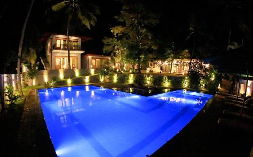
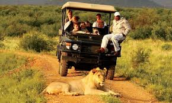
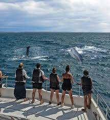

Discover the allure of Galle's hotels, where colonial charm meets modern luxury. From boutique hideaways to seaside resorts, find your perfect retreat. Indulge in breathtaking ocean views, exquisite dining, and warm Sri Lankan hospitality. Unwind in elegant rooms and suites adorned with traditional décor and modern amenities. Whether you seek tranquility, adventure, or cultural immersion, Galle's hotels offer an unforgettable experience. Plan your escape to this coastal gem and create memories to cherish forever.
Booking.com
Search Hotels in Galle

Jetwing LightHouse Galle
2.4 km fom beach Superior Double room Breakfast included Only 1 room is left at this price on our site 1 night 2 adults LKR 37,000
1.4 km fom beach Superior Double room Breakfast included with dinner Only 1 room is left at this price on our site night 2 adults LKR 57,000LKR 35,680---->+LKR 2,700 taxes and charges
2. km fom beach Superior Doble room Breakfast included Only 1 room is left at this price on our site 1 night 2 adults LKR 47,000LKR 22,680---->+LKR 2,700 taxes and charges
Unforgettable Experiences: Activities to Enjoy in Galle, Sri Lanka
In Galle, travelers are spoiled for choice when it comes to activities that cater to every taste and preference. The city's rich history and vibrant culture offer a plethora of experiences waiting to be explored. Begin your journey by wandering through the cobblestone streets of the UNESCO-listed Galle Fort, where colonial architecture and charming boutiques beckon. Dive into the azure waters of Unawatuna Beach for a day of sun-kissed relaxation or embark on an unforgettable snorkeling adventure to discover colorful coral reefs and exotic marine life. For the adventurous spirit, surfing at the renowned surf breaks of Hikkaduwa or exploring the lush greenery of the Sinharaja Forest Reserve offer thrilling escapades. Indulge your senses in the tantalizing flavors of Sri Lankan cuisine with a culinary tour, sampling spicy curries and delectable street food delights. Immerse yourself in the local culture with a visit to a traditional mask-making workshop or catch a mesmerizing Kandyan dance performance. End your day with a leisurely stroll along the Galle Ramparts, soaking in breathtaking views of the sunset over the Indian Ocean. Whatever your interests may be, Galle promises an unforgettable experience filled with adventure, relaxation, and cultural discovery.

Safari
Safari adventures promise an immersive journey into the heart of untamed landscapes, where every moment brims with excitement and discovery.raverse vast savannas, dense jungles, or arid deserts, encountering iconic creatures like lions, elephants, giraffes, and more. Witness the drama of predator-prey interactions and marvel at the raw beauty of the animal kingdom
Book
Cooking
Embark on a flavorful journey as you explore the diverse cuisines of different regions, from street food stalls to fine dining establishments, discovering the unique flavors and ingredients that define each culinary tradition.
Book
Riding
Riding a bicycle, also known as cycling, is a popular form of transportation, recreation, and exercise. It involves the use of a two-wheeled vehicle propelled by the rider's pedaling motion. Cycling is enjoyed by people of all ages and abilities and is often considered an efficient and environmentally friendly mode of transportation.
Book

Whale Watching
mbark on a mesmerizing journey into the world of giants with whale watching, where the vastness of the ocean serves as the backdrop for awe-inspiring encounters.
Book